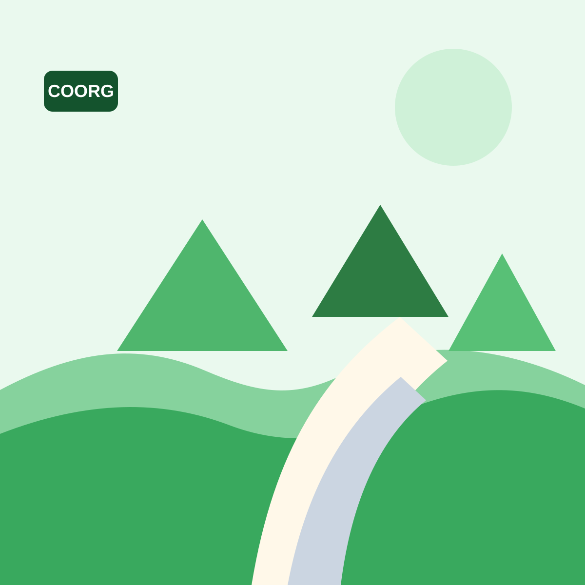
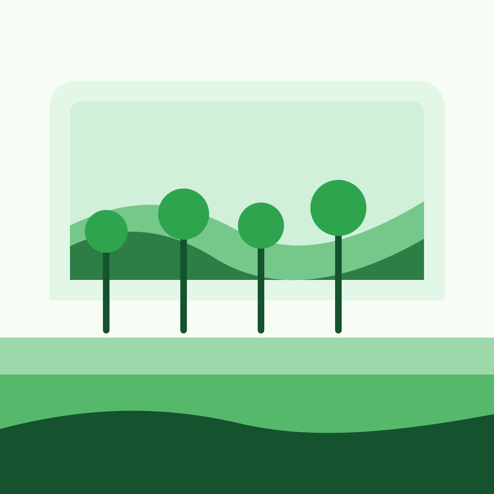

Local taxi service across Coorg
Affordable & Reliable Taxi Service in Coorg – Book Your Cab Now
Travel across Coorg with Coorg Thanika Travels for sightseeing, airport transfers, local rides, and outstation trips with trusted local drivers, clean vehicles, and quick booking support.
24/7 Taxi Service in Coorg
Experienced Local Drivers
Clean & Well-Maintained Vehicles
Budget-Friendly Pricing
About us
Your Local Taxi Partner in Coorg
Coorg Thanika Travels is a reliable and affordable taxi service provider in Coorg, offering comfortable travel solutions for tourists and locals. Whether you're visiting Coorg for a vacation, family trip, or weekend getaway, we provide safe and hassle-free transportation.
Our experienced local drivers know the best routes, hidden spots, and major tourist attractions, ensuring you enjoy every moment of your journey.
We focus on affordability, punctuality, and customer satisfaction, making us one of the most trusted taxi services in Coorg.
Services
Our Taxi Services in Coorg
Coorg Sightseeing Taxi
Comfortable day trips to waterfalls, coffee estates, viewpoints, temples, and top tourist spots across Coorg.

Airport Pickup & Drop
Timely airport transfers with reliable pickup coordination for smooth arrivals and departures.

Outstation Taxi Service
Safe intercity rides for Bangalore to Coorg Taxi needs and other nearby travel routes.

Local Taxi Services
Flexible local cab booking for shopping, short-distance travel, hotel transfer, and family movement.
Fleet
Our Fleet – Comfortable & Affordable Options
Sedan (Dzire / Etios)
Ideal for couples, solo travelers, and small families looking for smooth and economical cab travel in Coorg.
SUV (Innova / Innova Crysta)
Spacious and dependable for sightseeing, station pickup, and group travel with extra comfort.
Tempo Traveller
Best for large family trips, friends groups, and coordinated travel plans across Coorg and nearby destinations.
- Clean & Sanitized
- AC Vehicles
- Well-Maintained
- Skilled Drivers
Why choose us
Trusted by tourists and local travelers alike
Local Expert Drivers
Drivers who know Coorg routes, traffic timings, and tourist circuits well.
Affordable Pricing
Budget-friendly travel options without compromising comfort or reliability.
24/7 Availability
Quick responses for early-morning pickups, night travel, and urgent plans.
Clean Vehicles
Regularly maintained cabs that keep your trip comfortable and professional.
Flexible Plans
Half-day, full-day, transfer, and sightseeing taxi bookings based on your schedule.
Trusted by Tourists
A dependable option for Coorg visitors who want simple, safe, local travel.
SEO content
Best Taxi Service in Coorg – Affordable Cab Booking
If you are looking for dependable Coorg Taxi Service with clear communication and local route expertise, Coorg Thanika Travels is ready to help. We serve tourists, families, and business travelers with flexible travel options across Coorg.
From Taxi in Madikeri for local sightseeing to Coorg Cab Booking for full-day routes, we make planning easy. We also handle Bangalore to Coorg Taxi requests and Coorg Airport Taxi pickups with timely coordination and comfortable vehicles.
Gallery
Explore the feel of Coorg travel
FAQ
Common booking questions
What is the taxi fare in Coorg?
Taxi fare depends on the vehicle type, travel distance, trip duration, and pickup location. Call or WhatsApp us for the latest fare based on your exact plan.
Do you provide airport pickup and drop?
Yes. We offer airport pickup and drop service with advance booking and timely coordination for arrivals and departures.
What vehicles are available for booking?
We provide sedan cars, SUV options like Innova and Innova Crysta, and Tempo Traveller for bigger groups.
Can I book a cab for a full day in Coorg?
Yes. Full-day sightseeing and custom local travel packages are available based on the places you want to visit.
Coorg tourist places
Popular Places to Visit from Madikeri
Abbey Falls
7 km from MadikeriA scenic waterfall surrounded by coffee estates and greenery, ideal for a quick sightseeing stop close to town.
Raja's Seat
1 km from MadikeriA famous garden viewpoint known for misty valley views, relaxed evenings, and beautiful sunrise or sunset scenes.

Mandalpatti
18 km from MadikeriA hilltop viewpoint with winding roads, fresh mountain air, and wide views across the Western Ghats.
Talacauvery
43 km from MadikeriA peaceful pilgrimage spot in the hills, known as the origin of River Cauvery and often paired with Bhagamandala.
Omkareshwara Temple
1 km from MadikeriA peaceful town temple known for its unique architecture, calm water tank, and easy access from central Madikeri.
Golden Temple
34 km from MadikeriA popular Tibetan monastery at Bylakuppe with grand prayer halls, colorful artwork, and a peaceful spiritual setting.
Bhagamandala
36 km from MadikeriA sacred river confluence and temple town, commonly visited on the same route as Talacauvery.
Dubare Elephant Camp
29 km from MadikeriA family-friendly riverside attraction where visitors enjoy nature, boating, and elephant camp experiences.
Chiklihole Reservoir
27 km from MadikeriA quiet backwater spot near Kushalnagar, loved for open views, relaxed drives, and peaceful photo stops.

Nisargadhama
27 km from MadikeriA calm island-style nature stop near Kushalnagar with bamboo groves, walking paths, and picnic-friendly spaces.
Iruppu Falls
75 km from MadikeriA beautiful waterfall near Brahmagiri hills, ideal for nature lovers and longer sightseeing routes from Madikeri.
Nagarahole
90 km from MadikeriA well-known wildlife destination for forest drives, safari plans, and nature trips toward South Coorg.
Madikeri Fort
1 km from MadikeriA historic landmark in the heart of town, offering a quick heritage stop during local Madikeri sightseeing.
Museum
1 km from MadikeriA small heritage museum near Madikeri Fort with local history, artifacts, and a simple cultural stop for visitors.
Harangi Reservoir
36 km from MadikeriA scenic reservoir near Kushalnagar, often added to relaxed day trips with Golden Temple and nearby attractions.
Ready to ride?
Book Your Coorg Taxi Now – Fast & Easy
Speak directly with our team for quick confirmation, vehicle options, and local travel guidance.
Contact
Talk to Coorg Thanika Travels
Book your next cab with a trusted local team led by Pradeep G.